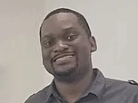

Working with Angeline
Jason Lind
Design Manager, 3M Healthcare
I had the pleasure of working with Angeline while she was a UX Intern at 3M within the Health Care Business Group. She supported our Design and Marketing teams with user research, information architecture, digital prototyping and strategy for a redesigned wound healing app. She always brought an intelligent, professional, and curious mindset to her projects. She was easy to work with and great at receiving feedback, all while being meticulous about the work she was delivering. Angeline would be an asset to any team she works with.

Stephen Gilbert
Director, Graduate Program in Human-Computer Interaction, Iowa State University
I was grateful to have Angeline as a teaching assistant in HCI/Psych 521: Cognitive Psychology of Human Computer Interaction. She impressed me in several ways: 1. Her feedback on students' work was very student-centered, always constructive and empathetic; 2. She often took initiative to go further than I asked, not just completing the task but suggesting a clever new perspective on it, for example changing a typical classroom activity into a much more engaging experience; 3. She accepted my feedback well, always ready to learn more and adapt. I wish I was able to work with her every semester.

Anuj Sharma
@Co-Founder, Coltie
Angeline was an exceptional asset to the COLTIE team, especially during the early development stages of COLTIE Hive. As a UX designer, she played a pivotal role in making our app significantly more user-friendly and accessible. Her design thinking laid a solid foundation for future iterations of the product. She also took the initiative to conceptualize, design, and produce a compelling YouTube advertisement that effectively communicated our platform's value. Her ability to balance creativity with strategic thinking was evident in every project she led. Beyond her technical contributions, Angeline stood out for her professionalism—she was hardworking, courteous, entrepreneurial in spirit, and an excellent team player. Her collaborative mindset and dedication to the mission made a lasting impact. We are incredibly grateful for her work and look forward to seeing all the great things she will accomplish ahead.

Justin Lee
@Senior UX Designer, John Deere
Angeline is a great designer to work with. Highly organized and very diligent. She is very collaborative and easy to work with.

Adam Dunford
@3M UX Principal
Angeline has done great work over the past few months. She’s been eager to learn, open to feedback, and genuinely appreciative of everyone’s contributions.

Simeon Kachikwu
@Digital Product Designer, Enovation Controls
I've worked with Angeline and she was a valuable addition to our Product Design team during that time. She is hardworking, humble, creative, pays close attention to details, and really good at giving and receiving feedback. I loved my experience working with her, and I know she would be an asset to any team.

Sydney Maras
@Senior Communications Manager, World Food Prize
I had the pleasure of working with Angeline Neo for over a year in the fast-paced and high yield environment of the non-profit communications space. Angeline exemplifies the kind of passionate, creative and forward thinking professional that anyone would want on their team. Our department benefited greatly from her positivity and strong work ethic, and I certainly hope to collaborate with her again in the future!
Jazzmine Brooks
@Founder, Jai Olive Wellness
I highly recommend working with Angeline for our nonprofit logo design and branding kit needs. We were moving from a business to a nonprofit model and wanted our new brand to keep a similar essence. Angeline was very thorough during their consultation and provided a detailed report of their scope and timeline, which I appreciated. Her attention to detail, creativity, and ability to capture the essence of our brand was truly impressive. She was highly responsive to feedback and worked diligently to ensure we were delighted with the final product. I do not doubt that her work will help elevate our brand and attract new clients and sponsors.
Ambassador Branstad
@Former President, World Food Prize
I had the opportunity to observe Angeline's contributions to graphic design within the Communications department. Angeline played a key role in designing marketing materials that strengthened our organization's visibility and global presence. On a personal level, Angeline is somewhat quiet and reserved, but her ability to connect with her colleagues is a refreshing skill all team members should have. Angeline holds herself to high standards, dedicates herself to everything she produces, and is exactly the kind of professional who elevates any team she joins. I recommend her without reservation to any organization seeking a talented and committed graphic designer.
Charmaine Denison-George
@Graphic Design Student, Wartburg College
Passionate, conscientious and disciplined are good words to describe Angeline. She has a knack for design that drives her academic and extracurricular pursuits. I am in awe of Angeline's ever-expanding skillset in the field of design and have no doubt that she will make magic with opportunities awarded to her in this regard..
Fatin Athira Azlan
@Data Analyst, Meltwater
I've worked with Angeline and she was a valuable addition to our Product Design team during that time. She is hardworking, humble, creative, pays close attention to details, and really good at giving and receiving feedback. I loved my experience working with her, and I know she would be an asset to any team.